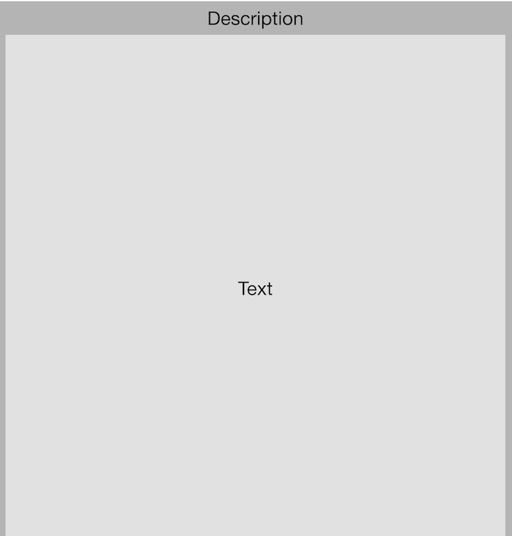

Rational
Introduction
The purpose of this text is to document the development process for the front end website project.
This document addresses:
- The process taken to mark up the content
- The process taken to style the web site
- Challenges encountered
- Usability and Accessibility
The Mark Up
The process taken to write the html occurred in a few stages. Since the content that was provided existed in multiple files, the first step was to analyse what would be a logical ordering for each of the pieces of content. Once this logical ordering was established the process of creating the html document could begin.
Logical ordering:
- Introduction
- History
- Locations
- Gallery
To write the html document it was necessary to know what are the semantic tags available and what are their meanings. Once the 'what' and 'why' of the html tags was determined the aggregated document was analyzed and the appropriate tags were given to describe the meaning of different parts of the content.
Iteratively the html was passed through an html document outliner to ensure that the overall structure of the content made semantic sense.
Styling
The first step in styling was to organize the elements to ensure that overall the web site was well formed. In this step some basic wireframes were constructed to guide the styling process. The following images show the outcome of this step.


- 

Once the basic form of the website was constructed actual coding of the styling begun. Starting from the smallest screen size, the main elements were given basic background color to distinguish them from one another, headings were styled to show structure within these sections, line height was set to ensure readability and the document was styled according to the wireframe. After completion of styling for small size screen, styling started at the medium size, then the large size styling followed. The outcome of this step was that a basic well formed document. The next step in the styling process was to add color.
The inspiration for color choices and textures was based on the historical nature of the content. Starting with the wooden background, which represents the relationship with sailing in that time period, colors were chosen to complement this starting point.
The following sites were used as inspiration:
Challenges encountered
The most challenging aspects of this project were incorporating images and textures.
Dealing with images of different dimensions caused problems in having related content stay visually consistent, this challenge was dealt with by resizing and cropping in Photoshop.
When incorporating textures, one of the original ideas was to have a texture in the background of the main text. This proved challenging in readability and how the end product looked at different screen sizes. To overcome this challenge less texture was used in a more tactful manner.
Usability and Accessibility
| Guideline | Achieved | How |
|---|---|---|
| 1.1.1 | Yes | All 'img' tags have 'alt' attribute |
| 1.3.1 | Yes | Use of HTML 5 semantic elements |
| 1.3.2 | Yes | Structure of document is not altered with CSS or Javascript |
| 1.4.1 | Yes | Space, headings and lines are used to distinguish elements |
| 1.4.2 | Not applicable | Not applicable |
| 2.1.1 | Yes | Through can tab through all elements |
| 2.1.2 | Yes | Tabs cylce through |
| 2.3.1 | Not applicable | Not applicable |
| 2.4.2 | Yes | Title declared in head of Html document |
| 2.4.3 | Applied | Testing |
| 2.4.4 | Yes | Links named coherently |
| 3.1.1 | Yes | Set in html tag |
| 4.1.1 | Yes | Html used according to specification |